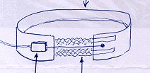
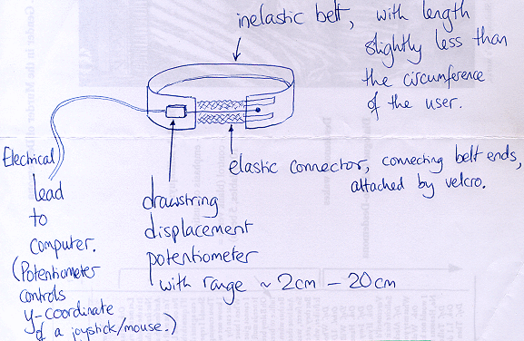

Dasher Developments
| Dasher/Owl |
| Automatic pointing calibration |
| Controlling Dasher by Breath or Buttons |
| Controlling Dasher by Tilt or Twist |
Controlling Dasher by BreathSimple idea: connect lung volume to the mouse y-coordinate, and use Dasher in its one-dimensional mode. Communicating while breathing in and out. Radical idea hey? In Summer 2003, we are trying a breathing monitor from qubitsystems, which uses an inflated belt and a pressure sensor to measure lung volume.
Another design for a breathing monitor, which we think might work better, is sketched here. It requires a distance-measuring element that can measure a range of 10-30mm to an accuracy of 0.25mm. Summer 2004: we have made a nice Breath-mouse, which works very nicely. | ||
Controlling Dasher by Buttons
The very first prototype of Dasher was driven by discrete keyboard button presses. One button press moves the viewpoint in and up, another in and down, another out. The continuous-pointing version of Dasher suits most people much better, but there is a small community of users (in particular, users who can't cope with time-critical tasks) for whom buttons are the preferred input mode. We are therefore reviving button-driven Dasher, and testing a couple of methods for mapping three buttons onto Dasher dynamics. January 2006: Dasher version 4 now has numerous button modes. | ||
|
Dasher home page | ||
|
 (Sketch by David MacKay, 22.7.2003.) 


|